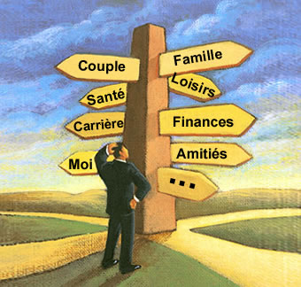

Le coach est un professionnel spécialement formé au coaching en terme de posture, de processus et de techniques. Il accompagne une personne ou une équipe à atteindre ses objectifs en s’appuyant sur ses ressources et en lui permettant de dépasser ses freins. Le coach n’est pas un consultant : il donne pas de conseils, c’est le client qui connaît et/ou découvre ses réponses. Le coach n’est pas un thérapeute : il n’accompagne pas les blessures du passé, il est orienté futur. Le coach n’est pas un formateur : il ne transmet pas de savoir et ne se positionne pas en tant qu’expert.
L'image provient de ce site.